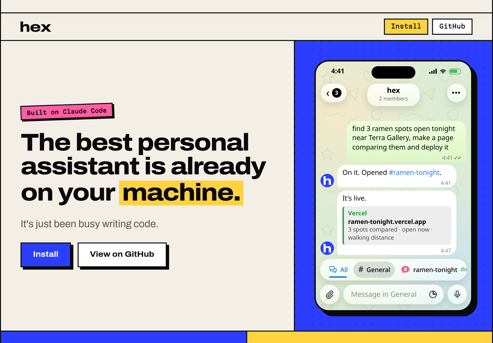
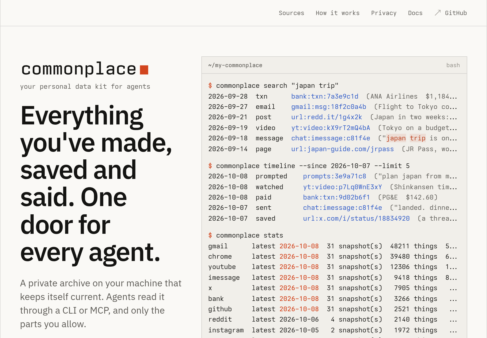
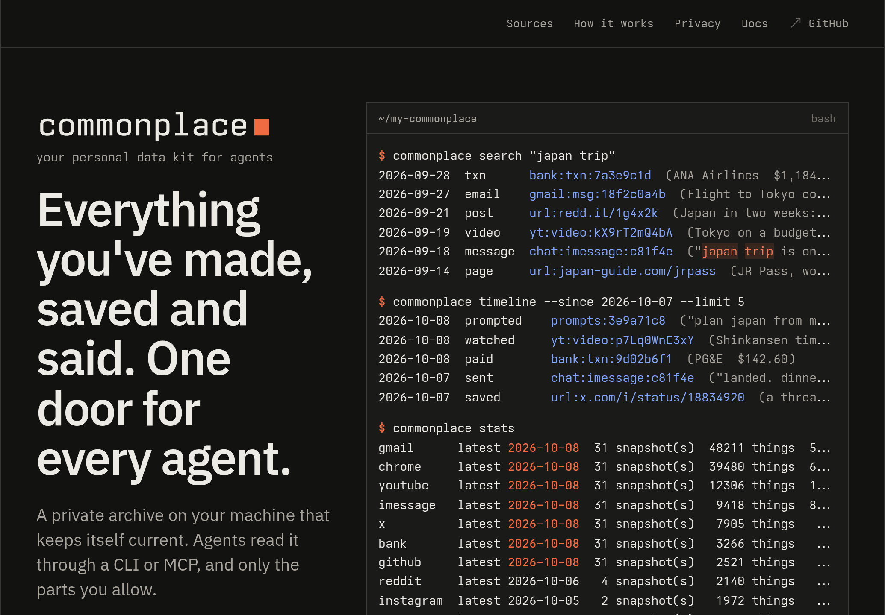
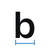

specimen · 2026-10-08
Say brand it.
brand a project from its own parts
$ npx skills add AVGVSTVS96/brand-it
01 type · Mona Sans and Mona Sans Mono
One family, two voices, one knob for width.
display 72 / 1.0 600 −0.03em
Say brand it.
h2 36 / 1.1 600 −0.025em
Marks from real font outlines.
h3 18 / 1.3 600
Checked at 16px and next to its neighbors
body 17 / 1.55 400 · 62ch
A brand here is a small system grown from the product's own parts. It's written down in one BRAND.md, shown working in one specimen.html, and made by scripts so any asset can be rebuilt.
small 15 / 1.5 400 · ink-2
hex took two days. commonplace went from a name to a live site in under two hours.
label 12 / 1 mono 500 · pencil
320 · 390 · 1035 · 1440 · 1920
code 14 / 1.6 mono 400
$ bun shoot.mjs site/ shots/ no problems · shots in shots/ at 390@2x, 1035, 1440
Both faces are one variable file each, shipped from fonts/ under the OFL, subset to Latin and the symbols the labels use, with weight 300 to 800 and width 85 to 110 kept. The wordmark is 600 at width 100. Labels sit at width 100 too; the narrow cut is for a number that has to fit, never a style.
02 color · paper, ink, one pencil
Blue is the pencil. It draws the construction and never the thing.
| token | light | dark | job |
|---|---|---|---|
| --paper | #FFFFFF | #101214 | the page. White, not cream: drafting paper, and the brands shown on it keep their own color. |
| --paper-2 | #F4F5F6 | #181B1E | tab strips, code panels, anything that is a surface inside the page |
| --ink | #0F1113 | #ECEEF0 | text, the wordmark, frames: the finished thing · 18.9:1 |
| --ink-2 | #5B6168 | #9AA1A8 | second-level text, captions · 6.3:1 |
| --ink-3 | #6B7177 | #8E959C | the dimmest text allowed: section names, rail text · 4.9:1 |
| --hair | rgb(15 17 19 / .12) | rgb(236 238 240 / .14) | 1px rules, table rows, borders of things that are not the subject |
| --pencil | #0B74D4 | #62BBFF | dimension lines, ticks, nodes, callouts, labels, focus: everything the method draws while checking · 4.7:1 |
| --pencil-soft | rgb(11 116 212 / .10) | rgb(98 187 255 / .14) | selection, the region a measurement covers |
brand-it has one color because the brands it shows bring theirs: hex is three accents on cream, commonplace is one red on paper. The pencil is the blue of a non-photo pencil, the one a drafter sketches guides with because it drops out of the final print. Dark is the same tokens swapped, never a second design. A problem is a dashed pencil line and a label, not a second color.
03 parts · what the method draws
Every motif is a thing the skill already does.
The dimension
Ticks, a line, the number knocked out of it. The number is measured, never typed. From the check: shots at 320 to 1920.
The node
The on-curve points of a glyph, as gen.mjs reads them with opentype.js. Shown at display size, gone below 48px.
The frame
1px ink around a real render, its width and theme on top, a dimension below. Shots are shown this way, never floating.

The callout
A dot on the part, a leader, a label in the pencil. One per thing, horizontal leaders only, label after the line.
The check
What shoot.mjs prints, in its exact shape. A problem is a dashed line and the script's own words.
$ bun shoot.mjs site/ shots/ text wider than its box: h1.hero "Say brand it." at light 320, dark 320 1 problems · shots in shots/ at 390@2x, 1035, 1440
The pair
Light and dark side by side, same tokens swapped. Anything shown once is shown twice.


04 examples · what the method made
Each one its own look.
Two brands made the same way. They share a method, not a look: hex is loud, commonplace is quiet, and the frame around them is the only thing that is brand-it's.
cream, ink and three accents with hard shadows. Archivo and Martian Mono. Two days from the name to the launch video.

paper, mono and one red. Ioskeley Mono and Plex Sans. Under two hours from the name to the live site.
05 wordmark and mark
The name in the face, and the b with its own construction.
Three directions, each drawn from the real outlines by logo/gen.mjs. The pick is A.
A · nodes · the pick
The wordmark in Mona Sans 600, and the first letter shown the way gen.mjs sees it: 29 on-curve points in pencil. It is the mechanism (marks from real outlines) drawn once, and it says what a brand here is: the finished thing with its construction still visible. Below 48px the points drop out and it is a plain b, which is the pencil's whole idea.
B · seam
Light and dark in one square, the b crossing the seam, and "it" knocked out of an ink block in the lockup. It is the boldest icon of the three and it says "same tokens swapped". Not picked: at 32px and below the b reads as a glitch, the lockup reads like a Pro badge, and the seam is a fact about every brand here, not about this one.
C · dimension

The wordmark measured: extension lines, a dimension line, its width. Quiet and witty, and it is the check made visible. Not picked as the mark because the dimension is the motif the whole system uses on everything else; as the logo it would measure nothing but itself. It lives on in the OG image and the README header, where the number is real.
Clear space is one b-height on every side. Minimum height 14px for the wordmark, 16px for the icon. The lockup with nodes is for display sizes only (the hero, the OG image, the README header); everywhere else the plain wordmark. Never recolor the nodes to anything but the pencil.
06 motion
Things move because something was measured.
A dimension draws from its first tick to its second and then the number appears; nodes land in outline order; a frame's shot appears whole, like a render finishing. Nothing moves on a timer or on scroll. This page measures the hero on load and again on resize, and that is the only time its lines redraw.
--ease · cubic-bezier(0.2, 0.7, 0.2, 1)
Nodes stagger at 24ms each, so the 29 points of the b land in 0.9s. Exits are half the length of entrances. prefers-reduced-motion skips all of it and shows the measured state.
07 video · 1920×1080, one clock
The same page, measured, at 1920 by 1080.
Marks from real font outlines.
| t | scene | on screen | caption | why |
|---|---|---|---|---|
| 0.0 – 3.0 | the ask | an agent prompt, typed at 45ms a character: brand it | Say brand it. | the name is the command; open on the point |
| 3.0 – 8.5 | the parts | a README line, a CLI line, a glyph outline, each with a callout, settling into one row | A brand grown from the product's own parts. | the thesis |
| 8.5 – 15.0 | the mark | the b's outline draws, 29 nodes land in order, the glyph fills ink, a dimension measures it | Marks from real font outlines. | the magic underneath, the one big sound |
| 15.0 – 21.0 | the check | frames step from 320 to 1920, light then dark, then shoot.mjs prints its last line | Shot at 45 widths, light and dark. | it checks its own work |
| 21.0 – 29.0 | each one its own look | hex and commonplace in frames, side by side, their names as labels | Each one its own look. | the proof; the loud one and the quiet one |
| 29.0 – 33.0 | introducing | the lockup lands with its dimension, held | brand-it | the reveal, half a second longer than feels needed |
| 33.0 – 37.0 | install | npx skills add AVGVSTVS96/brand-it typed; the end frame is complete | brand a project from its own parts | the one ask; a poster frame |
37 seconds, seven scenes, hard cuts on half seconds at 120 BPM in C. Rails: wordmark top-left, tagline top-right, scene count bottom-left, URL bottom-right. Pencil lines are 2px on the stage. Sound: typing ticks under the typed lines, one tone when the b fills, a quiet tap when the width sweep stops, a tap for the introducing card, and the end chord rings out. Six cues.